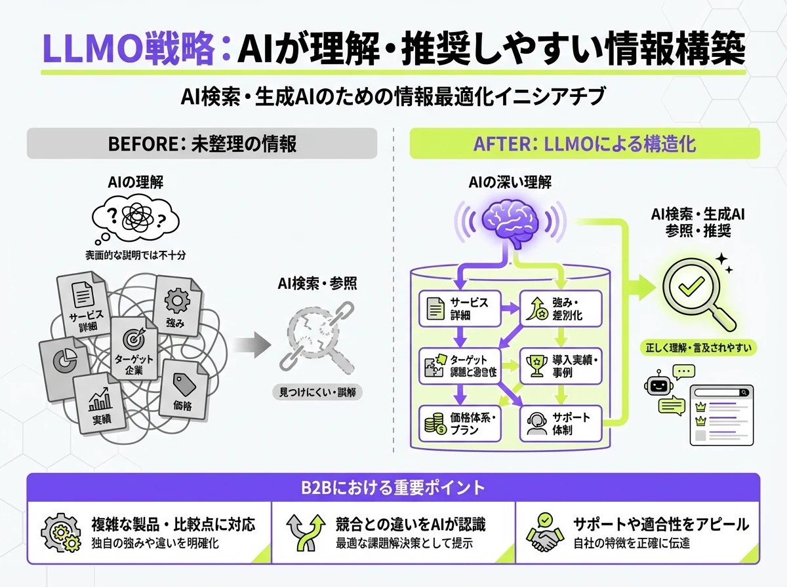
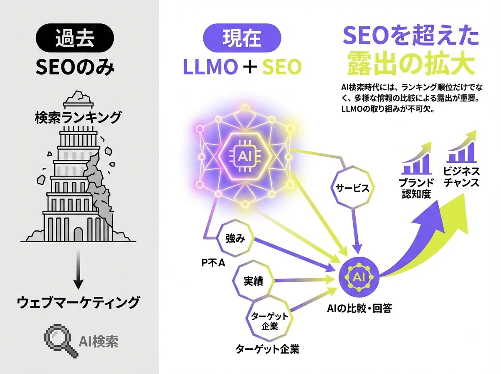

会社比較
検討初期の課題検索から複数社比較、社内稟議まで。見込み客が必要とする情報を整え、AI検索から営業商談につながる入口をつくる月額50,000円の支援サービスです。
業界・用途、導入事例、仕様、料金、セキュリティを整理し、比較に必要な情報をAIへ。
支援イメージAI回答を確認
対象業界、用途、機能、費用、導入条件を整理し、判断材料として伝わる状態を目指します。
「BtoBのAIO（LLMO・GEO）」は 株式会社AIMAのBtoB企業向けAIO（LLMO・GEO）サービスです。
「BtoBのAIO（LLMO・GEO）」は、法人向けの商品・サービスを、ChatGPTやGemini、Claude、AI Overviewsなどに正しく理解・引用されやすくする支援です。BtoBの見込み客は、最初から会社名で検索するとは限りません。「この課題を解決する方法は？」「おすすめのサービスは？」「A社とB社の違いは？」と調べ、導入事例、仕様、料金、セキュリティを確認し、社内稟議を通してから問い合わせます。AIMAはこの長い検討過程に合わせて情報を整え、AI回答で知る、比較する、社内で説明する、営業へ相談するという流れをつくります。
見込み客が「○○業界の業務効率化」「○○を改善する方法」とAIに聞いても、自社の名前が出なければ比較対象に入りにくくなります。製品名だけでなく、解決できる課題や対象業界をAIが理解できる情報設計が必要です。
機能一覧だけでは、AIも担当者も「どの企業に向くか」「競合との違い」「導入後の使い方」を判断しにくくなります。業界・用途別ページや導入事例をつなぎ、比較の根拠を明確にする必要があります。
担当者が興味を持っても、費用、契約条件、対応範囲、セキュリティ、導入体制が見つからなければ、上司や情報システム部門へ説明できません。商談前の不安を減らす情報整備が重要です。
見込み客の課題検索、比較検討、導入判断、社内稟議に沿って想定質問を設計し、必要なページ原稿の制作・リライトから公開後のAI回答確認までまとめて支援します。
初期費用なし、月額50,000円（税別）で始められます。最低契約期間もないため、まずは優先度の高い商品や業界から小さく始め、社内の理解を得ながら対象を広げられます。
一般論の提案で終わらず、課題検索、比較、導入事例、業界・用途、仕様、料金、セキュリティまで整理します。合意した対象の記事・FAQなどの原稿制作・修正に回数上限はありませんが、制作本数・分量・優先順位は毎月相談して決めます。
BtoBでは、マーケティングだけでなく営業、製品、法務、セキュリティ部門の確認が必要です。相談回数に上限を設けず、公開できる情報を一つずつ確認しながら進めます。
初期費用なし。最低契約期間なし。1ヶ月単位で始められます。
BtoBの長い検討プロセスに合わせ、AIが引用しやすく、担当者が社内で説明しやすい情報を実務ベースで整えます。
プランに含まれる内容
たとえば、見込み客がAIに「製造業の受発注ミスを減らす方法」を聞く場面では、課題解決の記事から自社を知ってもらいます。次に「受発注システムを比較して」では、業界・用途ページや導入事例で違いを伝えます。さらに、仕様、料金、セキュリティ、導入体制をFAQで整理し、社内稟議と営業相談に必要な材料へつなげます。AIMAは、実際のAI回答を確認しながら不足情報を改善します。


商材と営業プロセスを理解し、検討段階ごとの質問を決め、必要な情報を制作します。公開後はAI回答を確認し、商談につながる導線を継続して改善します。
「課題検索や比較で自社が出てこない」「稟議に必要な情報が足りない」という段階で大丈夫です。
通常1営業日以内にご返信いたします。